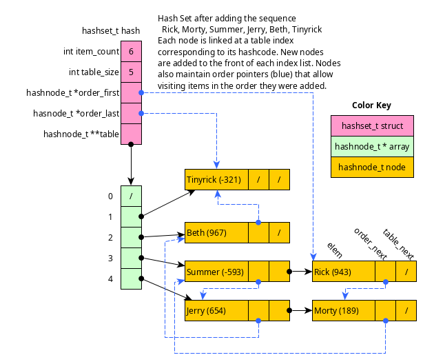

CSCI 2021 Project 1: C Programming
- Due: 11:59pm Wed 08-Feb-2023
- Approximately 4.0% of total grade
- Submit to Gradescope
- Projects are individual work: no collaboration with other students is allowed. Seek help from course staff if you get stuck for too long.
CODE DISTRIBUTION: p1-code.zip
VIDEO OVERVIEW: https://youtu.be/E4tc68LsS0k
VIDEO TUTORIAL: P1 Online Tutorial Video
CHANGELOG:
- Fri Feb 3 10:49:36 AM CST 2023
The original documentation for
hashset_load()indicated an incorrect return value for a successful load. The docs have been fixed to readReturns 1 on successful loading
- Thu Feb 2 10:03:27 AM CST 2023
The Gradescope submission link for Project 1 is now active. Make sure to submit with enough time before the deadline to view the online test results and deal with errors such as submitting the wrong zip.
The Wed 01-Feb Tutorial session on Zoom was successfully recorded and the video of it is available here: P1 Online Tutorial Video.
Students reported that one of the provided files
demo_test_hash_init.cdid not compile. This is because it was not updated from a previous version of the project. The file has now fixed and can be updated viamake sanity-restore. The file is just present to show some of the syntax around accessing parts of the hash table structs and is not actually used in testing.- Mon Jan 30 01:14:32 PM CST 2023
A but in the
Makefilewas reported that makes it unreliable to run tests for problem 2 viamake test-prob2. This bug has been fixed and students can automatically update theirMakefileby typing the commandmake sanity-restore
which will download and install the updated
Makefile.- Mon Jan 30 11:46:51 AM CST 2023
- A video overview of Project 1 is now available linked at the top of P1 specification and directly here: https://youtu.be/E4tc68LsS0k
1 Introduction
Basic application programming in C is an essential step downward towards the lower levels of computing. This project explores fundamental aspects of getting work done in C:
- Dynamic memory management with
malloc()/free() - Reading data from files in text format
- Displaying information to the screen
- Reading commands from users in interactive programs
- Building data structures with C
structs
The assignment is divided into several problems utilizing many of the above techniques.
- Problem 1 implements a few simple function surrounding a
structrepresenting stock prices. - Problem 2 builds on the previous routines to complete a stock plotting program.
- Problem 3 builds a hash table that tracks unique items
Problems 1 and 2 build on each other and are somewhat easier than Problem 3. Strongly consider going in order on the Project to take advantage of the structure in early problems before reaching the more open-ended final problem.
1.1 Grading Criteria
Credit for this assignment will be given based on two categories.
- Manual Inspection Criteria (~50%): Each problem has a checklist of things that graders will look for. The checklist is in the spec and often contains hints on what to do. Make sure you have a look at these.
- Automated Testing (~50%): Each problem has tests associated with it along with instructions on how to run those tests from the command line. Tests require that code compiles and runs according to the descriptions given so make sure you verify that these work.
1.2 Getting Started
Take the following steps to get started
- Download the code associated with the project linked at the top of the spec. Unzip it and examine some of the provided code.
- Examine the overview of the files provided listed in the Download and Setup section. This gives brief descriptions of files that already exist and those that you must create.
- Pick a problem and read. There is a lot of information and many examples provided for each problem. Reading this will help you write the correct code earlier rather than later.
- Ask questions: if its not clear how to proceed, put up a Piazza post or visit an office hour.
- Get coding: don't wait to start for too long as this will greatly increase your stress level and potentially result in late submissions.
- Familiarize yourself with the late submission policy for assignments so you are not caught off guard. No submissions will be accepted more than 48 hours after the deadline.
2 Download Code, Setup, and Automated Tests
Download the code pack linked at the top of the page. Unzip this which will create a project folder. Create new files in this folder. Ultimately you will re-zip this folder to submit it.
| File | State | Notes |
|---|---|---|
Makefile |
Provided | Build file to compile all programs |
stock_funcs.c |
EDIT | Problem 1/2 functions to write |
stock_demo.c |
Provided | Problem 1/2 demo code to show some function invocations |
stock_main.c |
Provided | Problem 2 main function, do not edit |
stock.h |
Provided | Problem 1/2 header file |
test_stock_funcs.c |
Testing | Testing file for Problems 1 & 2 |
data/stock-ascending.txt |
Data | Data files for problems 1 & 2 |
data/stock-valley.txt |
Data | |
data/stock-jagged.txt |
Data | |
| … | Data | |
hashset.h |
Provided | Problem 3 header file |
hashset_funcs.c |
CREATE | Problem 3 functions to write |
hashset_main.c |
CREATE | Problem 3 main function to write |
data/hashset_demo.script |
Data | Problem 3 sample input scripts to main program |
data/alphabet.script |
Data | |
data/rm.hashset |
Data | Problem 3 sample hash set save files |
data/alphabet.hashset |
Data | |
data/alphabet_expand.hashset |
Data | |
| TESTING | ||
testy |
Testing | Test running script |
test-results/ |
Testing | Directory in which temporary testing files are written |
test_stock1.org |
Testing | Problem 1 tests |
test_stock2.org |
Testing | Problem 2 tests |
test_hashset.org |
Testing | Problem 3 tests |
2.1 Makefile
A Makefile is provided as part of this project. Building programs in
C is a bit tedious and most folks use build systems of which make
is the oldest. The instructions and dependencies to create programs
are written in a Makefile which is then interpreted by the make
program which will run gcc and other commands to create programs.
Use this Makefile by issuing commands like make prob1
> make prob2 # build problem 2 main program gcc -Wall -Wno-comment -Werror -g -c stock_main.c gcc -Wall -Wno-comment -Werror -g -c stock_funcs.c gcc -Wall -Wno-comment -Werror -g -o stock_main stock_main.o stock_funcs.o > make clean # remove all programs/binary object files rm -f stock_main stock_demo test_stock_funcs hashset_main *.o > make prob3 # build problem 3 main program gcc -Wall -g -lm -c hashset_main.c gcc -Wall -g -lm -c hashset_funcs.c gcc -Wall -g -lm -o hashset_main hashset_main.o hashset_funcs.o FINISH ME > make clean # remove all programs/binary object files rm -f stock_main stock_demo test_stock_funcs hashset_main *.o > make # build all programs/objects for the assignment gcc -Wall -Wno-comment -Werror -g -c stock_main.c gcc -Wall -Wno-comment -Werror -g -c stock_funcs.c gcc -Wall -Wno-comment -Werror -g -o stock_main stock_main.o stock_funcs.o gcc -Wall -Wno-comment -Werror -g -c stock_demo.c gcc -Wall -Wno-comment -Werror -g -o stock_demo stock_demo.o stock_funcs.o gcc -Wall -Wno-comment -Werror -g -o test_stock_funcs test_stock_funcs.c stock_funcs.o gcc -Wall -Wno-comment -Werror -g -c hashset_main.c gcc -Wall -Wno-comment -Werror -g -c hashset_funcs.c gcc -Wall -Wno-comment -Werror -g -o hashset_main hashset_main.o hashset_funcs.o
You are not required to understand all that is the Makefile (yet)
but it is a very useful tool and may be worth your while to inspect.
Running make help will provide a summary of the build/test commands
present in the Makefile.
Typical usage is: > make # build all programs > make clean # remove all compiled items > make zip # create a zip file for submission > make prob1 # built targets associated with problem 1 > make test # run all tests > make test-prob2 # run test for problem 2 > make test-prob2 testnum=5 # run problem 2 test #5 only > make sanity-check # check that provided files are up to date / unmodified > make sanity-restore # restore provided files to current norms
2.2 Automated Tests
Automated tests are included with the code distribution. These tests are known to work on lab machines only but in most cases they should run identically in Linux environments such as the Windows subsystem for Linux or a virtual machine.
The provided Makefile allows automated tests to be run via calls
like make test-prob1 to test Problem 1 and make test-prob2 to test
Problem 2. See the transcript below.
>> make test-prob1 # run tests for problem 1, compiles required code first gcc -Wall -Wno-comment -Werror -g -c stock_funcs.c gcc -Wall -Wno-comment -Werror -g -o test_stock_funcs test_stock_funcs.c stock_funcs.o ./testy test_stock1.org ============================================================ == test_stock1.org : Problem 1 First 3 Functions in stock_funcs.c == Running 15 / 15 tests 1) stock_new : ok 2) stock_free1 : ok 3) stock_free2 : ok 4) stock_free3 : ok 5) stock_free4 : ok 6) stock_print1 : ok 7) stock_print2 : ok 8) stock_print3 : ok 9) stock_print4 : ok 10) stock_print5 : ok 11) stock_print_prices_0 : ok 12) stock_print_prices_1 : ok 13) stock_print_prices_2 : ok 14) stock_print_prices_3 : ok 15) stock_print_final : ok ============================================================ RESULTS: 15 / 15 tests passed >> make test-prob2 # run tests for problem 2 gcc -Wall -Wno-comment -Werror -g -c stock_main.c gcc -Wall -Wno-comment -Werror -g -o stock_main stock_main.o stock_funcs.o ./testy test_stock2.org ============================================================ == test_stock2.org : Problem 2 Remaining Functions in stock_funcs.c == Running 15 / 15 tests 1) stock_set_minmax1 : ok 2) stock_set_minmax2 : ok 3) stock_set_minmax3 : ok 4) stock_set_best1 : ok 5) stock_set_best2 and 3 : ok 6) stock_set_best4 : ok 7) count_lines : ok 8) stock_load1 : ok 9) stock_load2 and 3 : ok 10) stock_load pathological : ok 11) stock_plot1 : ok 12) stock_plot2 3 4 : ok 13) stock_plot5 6 : ok 14) stock_main1 : ok 15) stock_main2 : ok ============================================================ RESULTS: 15 / 15 tests passed > make test # run tests for all problems ...
Each problem describes specifically how tests can be run and how credit will be assigned.
Note that one can run a single test with the following make
invocation which sets testnum.
> make test-prob2 testnum=5
This is useful when debugging to limit the output and time it takes to check program results.
3 Problem 1: Stock Plotting
3.1 Overview and Demo
Problems 1 and 2 create a small plotting application that is focused on stock prices. In stock trading, the idea is to buy a stock when it is priced low and sell it at a later time point when the price is high which will net the profit of the difference between each. Of course, this must be done by predicting when prices are at their highest and lowest points and some insight can be garnered from examining historical data for stock prices. The application you will build allows for easy analysis of a simple data file containing times/prices for stocks and display of their information in simple text plots. At the end of problems 1 and 2, you will have an application which produces the following kind of output.
>> ./stock_main 10 data/stock-ascending.txt # plot a stock-ascending data file
data_file: data/stock-ascending.txt
count: 10
prices: [10.00, 20.00, 30.00, ...] # shows the first few stock prices
min_index: 0 # calculates time for min/max price
max_index: 9
best_buy: 0 # calculates optimal buy/sell time
best_sell: 9
profit: 90.00
max_width: 10 # 10 specifed on command line for bar width
range: 90.00 # difference between max/min stock
plot step: 9.00 # amount represented by each plot hash
+----------
0: B MIN 10.00 | # visual representation of stock
1: 20.00 | # prices over time
2: 30.00 |##
3: 40.00 |###
4: 50.00 |####
5: 60.00 |#####
6: 70.00 |######
7: 80.00 |#######
8: 90.00 |########
9: S MAX 100.00 |##########
>> ./stock_main 20 data/stock-ascending.txt # same file make the bars bigger:
data_file: data/stock-ascending.txt # 20 hashes wide rather than 10 wide
count: 10
prices: [10.00, 20.00, 30.00, ...]
min_index: 0
max_index: 9
best_buy: 0
profit: 90.00
best_sell: 9
max_width: 20 # 20 specified on command line which
range: 90.00 # makes the bars wider
plot step: 4.50
+--------------------
0: B MIN 10.00 |
1: 20.00 |##
2: 30.00 |####
3: 40.00 |######
4: 50.00 |########
5: 60.00 |###########
6: 70.00 |#############
7: 80.00 |###############
8: 90.00 |#################
9: S MAX 100.00 |####################
>> ./stock_main 20 data/stock-valley.txt # plot a different file
data_file: data/stock-valley.txt # which has a valley shape
count: 12
prices: [100.00, 90.00, 80.00, ...]
min_index: 5
max_index: 11
best_buy: 5
best_sell: 11
profit: 55.00
max_width: 20
range: 55.00
plot step: 2.75
+--------------------
0: 100.00 |##################
1: 90.00 |##############
2: 80.00 |##########
3: 70.00 |#######
4: 60.00 |###
5: B MIN 50.00 |
6: 55.00 |#
7: 65.00 |#####
8: 75.00 |#########
9: 85.00 |############
10: 95.00 |################
11: S MAX 105.00 |####################
>> ./stock_main 20 data/stock-jagged.txt # plot a file with greater
data_file: data/stock-jagged.txt # variance in prices
count: 15
prices: [103.00, 250.00, 133.00, ...]
min_index: 8
max_index: 11
best_buy: 8
best_sell: 11
profit: 232.00
max_width: 20
range: 232.00
plot step: 11.60
+--------------------
0: 103.00 |#####
1: 250.00 |##################
2: 133.00 |########
3: 143.00 |#########
4: 168.00 |###########
5: 91.00 |####
6: 234.00 |################
7: 59.00 |#
8: B MIN 38.00 |
9: 45.00 |
10: 254.00 |##################
11: S MAX 270.00 |####################
12: 59.00 |#
13: 72.00 |##
14: 107.00 |#####
>> ./stock_main 25 data/stock-min-after-max.txt # plot a stock with varying
data_file: data/stock-min-after-max.txt # prices
count: 15
prices: [223.00, 292.00, 27.00, ...]
min_index: 10 # minimum price appear after
max_index: 4 # the maximum price
best_buy: 2 # finding the optimal buy/sell
best_sell: 4 # point is harder in this case
profit: 296.00
max_width: 25
range: 309.00
plot step: 12.36
+-------------------------
0: 223.00 |################
1: 292.00 |######################
2: B 27.00 |#
3: 92.00 |######
4: S MAX 323.00 |#########################
5: 189.00 |##############
6: 207.00 |###############
7: 142.00 |##########
8: 321.00 |########################
9: 89.00 |######
10: MIN 14.00 |
11: 182.00 |#############
12: 164.00 |############
13: 156.00 |###########
14: 169.00 |############
>> ./stock_main 9 data/stock-descending.txt # if the stock is continually
No viable buy/sell point # declining, its best not to buy
data_file: data/stock-descending.txt
count: 10
prices: [100.00, 90.00, 80.00, ...]
min_index: 9
max_index: 0
best_buy: -1 # not worthwhile to buy/sell in
best_sell: -1 # this situation
profit: 0.00
max_width: 9
range: 90.00
plot step: 10.00
+---------
0: MAX 100.00 |#########
1: 90.00 |########
2: 80.00 |#######
3: 70.00 |######
4: 60.00 |#####
5: 50.00 |####
6: 40.00 |###
7: 30.00 |##
8: 20.00 |#
9: MIN 10.00 |
3.2 Outline of stock_funcs.c
The file stock_funcs.c will contain most of the support functions
for the stock plotting program. An outline of these functions are
presented below. Note that each function has the Problem # to which it
belongs.
// stock_funcs.c: support functions for the stock_main program. stock_t *stock_new(); // PROBLEM 1: Allocate a new stock struct and initialize its fields. // Integer fields like 'count' and 'min_index' should be initialied to // -1. Pointer fields like 'prices' should be initialized to // NULL. The stock should be heap-allocated using malloc() and // returned. Since this is an allocation function, no use of 'free()' // should appear. void stock_free(stock_t *stock); // PROBLEM 1: Free a stock. Check the 'data_file' and 'prices' fields: // if they are non-NULL, then free them. Then free the pointer to // 'stock' itself. void stock_print(stock_t *stock); // PROBLEM 1: Prints data about a stock that is passed in via a // pointer. Uses the syntax ptr->field to access fields of the struct // pointed by 'stock'. Output follows the general convention: // // data_file: data/stock-jagged.txt // count: 15 // prices: [103.00, 250.00, 133.00, ...] // min_index: 8 // max_index: 11 // best_buy: 8 // best_sell: 11 // profit: 232.00 // // Where each line prints a field of the stock_t struct. In all cases, // floating point numbers are printed with 2 decimal digits of accuracy. // // NULLS FOR FIELDS // The fields 'data_file' and 'prices' may be NULL in which case they // will be printed specially as in // // data_file: NULL // prices: NULL // // This requires a manual if/else check for NULL values for these pointers. // // PRICES FIELD // When printing the 'prices' field, if the 'count' field is 0 to 3, // print the entire array as in // // prices: [] # count == 0 // prices: [70.00] # count == 1 // prices: [50.00, 90.00] # count == 2 // prices: [59.00, 45.00, 103.00] # count == 3 // // Otherwise, print the first 3 elements with a ... at the end as in // // prices: [10.00, 20.00, 30.00, ...] # count > 3 // // PROFIT // There is no 'profit' field in the struct. Instead, calculate the // profit as the difference between the price at the 'best_sell' index // and 'best_buy' index. If these indices are -1 indicating the best // buy/sell time is not known or not viable, print a proit of 0.0 void stock_set_minmax(stock_t *stock); // PROBLEM 1: Sets the index of 'min_index' and 'max_index' fields of // the stock to be the positions in 'prices' of the minimum and // maximum values present in it. Uses a simple loop over the array // 'prices' which is 'count' elements long to examine each for // max/min. If 'count' is zero, makes no changes to 'min_index' and // 'max_index'. int stock_set_best(stock_t *stock); // PROBLEM 2: Sets the 'best_buy' and 'best_sell' fields of 'stock'. // This corresponds to the pair which produces the best profit. On // determining the best buy/sell indices which produce a positive // profit, sets these fields in 'stock' and returns 0. If there is no // buy/sell point which would result in a positive profit, sets the // 'best_buy' and 'best_sell' indices to -1 and returns -1. Always // calculates the earliest buy/sell pair of indices that would get the // best profit: if 5,8 and 5,9 and 7,10 all give the same, maximal // profit, the best buy/sell indices are set to 5,7. // // ALGORITHM NOTES // One intuitive algorithm to compute this is to try every possible // buy index (outer loop) and every possible sell index after it // (inner loop) looking for the maximum profit produced in it. This is // a O(N^2) algorithm with N=count. Using this algorithm is a good // start. Some MAKEUP CREDIT will be awarded for implementing a more // efficient, O(N) algorithm here. See the specification for more details. int count_lines(char *filename); // PROBLEM 2: Opens file named 'filename' and counts how many times // the '\n' newline character appears in it which corresponds to how // many lines of text are in it. Makes use of either fscanf() with // the %c format to read single characters or alternative I/O // functions like fgetc(). Closes the file before returning a count of // how many lines are it it. If for any reason the file cannot be // opened, prints a message like // // Could not open file 'not-there.txt' // // and returns -1 to indicate failure. int stock_load(stock_t *stock, char *filename); // PROBLEM 2: Loads a stock from file 'filename' into 'stock' filling // its 'prices' and 'count' fields in. Makes use of the count_lines() // function to determine how many lines are in the file which will // dictate 'count' and the length of 'prices'. Allocates space in the // heap for the stock's 'prices' array, opens the 'filename' and // iterates through reading prices into the array. The data format for // prices files is // // time_03 133.00 // time_04 143.00 // time_05 168.00 // time_06 91.00 // // where each line has a time as as single string and a price which is // floating point number. The times can be ignored which can be // accomplished with a fscanf() call with format "%*s" to read a // string but ignore/discard it. // // Assigns the 'datafile' field to be a duplicated string of // 'filename' for which 'strdup()' is extremely useful. This string // must be free()'d later likely in 'stock_free()' // // On successfully loading the stock, returns 0. // // If 'filename' cannot be opened, prints the message // // Unable to open stock file 'some-stock.txt', bailing out // // with 'filename' substituted in for the name of the stock and // returns -1. void stock_plot(stock_t *stock, int max_width); // PROBLEM 2: Plots a graphical representation of stock // information. First calculates and prints plot which is in the // following format: // // max_width: 25 // range: 40.00 // plot step: 1.60 // // The prints a header line and iterates through each stock data on it // along with a bar which varies in width with the stock price. A // sample format is as follows with some annotations. // //....20 spaces.......+ ...max_width dashes..... //01234567890123456789 // +------------------------- // 0: 223.00 |################ // 1: 292.00 |###################### // 2: B 27.00 |# // 3: 92.00 |###### // 4: S MAX 323.00 |######################### // 5: 189.00 |############## // 6: 207.00 |############### // 7: 142.00 |########## // 8: 321.00 |######################## // 9: 89.00 |###### // 10: MIN 14.00 | // 11: 182.00 |############# // 12: 164.00 |############ // 13: 156.00 |########### // 14: 169.00 |############ //01234567890123456789 //| | | | | //| | | | +-> Each bar is (price-min)/plot_step hashes wide //| | | +-> Stock price printed with format %8.2f //| | +-> Print MIN or MAX if the stock is at min_index/max_index //| +-> Print B or S if the stock is at the best_buy/best_sell index //+--> Index in the array printed with format %3d
3.3 Editing and Testing
The project code contains a skeleton version of stock_funcs.c which
you should fill in with definitions. With this skeleton version, you
can immediately start testing your code by typing make test-prob1.
Without changes, you will get failures for all tests as in
>> make test-prob1 gcc -Wall -Wno-comment -Werror -g -o test_stock_funcs test_stock_funcs.c stock_funcs.o ./testy test_stock1.org ============================================================ == test_stock1.org : Problem 1 First 3 Functions in stock_funcs.c == Running 15 / 15 tests 1) stock_new : FAIL -> results in file 'test-results/prob1-01-result.tmp' 2) stock_free1 : FAIL -> results in file 'test-results/prob1-02-result.tmp' 3) stock_free2 : FAIL -> results in file 'test-results/prob1-03-result.tmp' ... ============================================================ RESULTS: 0 / 15 tests passed
However, the ability to run tests on your code an see progress is extremely important. Your first goal when starting a new project should be to see some results or running the program which is much easier if some benevolent dictator has provided a bunch of tests.
You can also use the invocation
> make test-prob1 testnum=5
to run a single test and see its results in the terminal.
Failed tests generate results files which can be viewed in any text
editor or in the terminal. The cat command can show such results in
the terminal via cat test-results/some-file.txt.
Below the results for the first test are shown and from the comparison
and Valgrind report, it appears that there is some sort of Memory
problem with the stock_new() function.
>> cat test-results/prob1-01-result.tmp
* (TEST 1) stock_new
COMMENTS:
** program: ./test_stock_funcs stock_new
** --- Failure messages ---
- FAILURE(139) due to SIGSEGV (segmentation fault) from OS
- FAILURE: Output Mismatch at lines marked
** --- Side by Side Differences ---
- Expect output in: test-results/raw/prob1-01-expect.tmp
- Actual output in: test-results/raw/prob1-01-actual.tmp
- Differing lines have a character like '|' '>' or '<' in the middle
#+BEGIN_SRC sbs-diff
==== EXPECT ==== ==== ACTUAL ====
{ {
// Tests stock_new() function and whether it initializes fields // Tests stock_new() function and whether it initializes fields
// correctly before returning a stock. // correctly before returning a stock.
stock_t *stock = stock_new(); // call function to allocate/init stock_t *stock = stock_new(); // call function to allocate/init
printf("stock->data_file: %p\n" , stock->data_file); printf("stock->data_file: %p\n" , stock->data_file);
printf("stock->count: %d\n" , stock->count); printf("stock->count: %d\n" , stock->count);
printf("stock->prices: %p\n" , stock->prices); printf("stock->prices: %p\n" , stock->prices);
printf("stock->min_index: %d\n" , stock->min_index); printf("stock->min_index: %d\n" , stock->min_index);
printf("stock->max_index: %d\n" , stock->max_index); printf("stock->max_index: %d\n" , stock->max_index);
printf("stock->best_buy: %d\n" , stock->best_buy); printf("stock->best_buy: %d\n" , stock->best_buy);
printf("stock->best_sell: %d\n" , stock->best_sell); printf("stock->best_sell: %d\n" , stock->best_sell);
free(stock); // de-allocate manually free(stock); // de-allocate manually
} }
stock->data_file: (nil) | Segmentation Fault
stock->count: -1 <
stock->prices: (nil) <
stock->min_index: -1 <
stock->max_index: -1 <
stock->best_buy: -1 <
stock->best_sell: -1 <
#+END_SRC
** --- Line Differences ---
EXPECT: 17) stock->data_file: (nil)
EXPECT: 18) stock->count: -1
EXPECT: 19) stock->prices: (nil)
EXPECT: 20) stock->min_index: -1
EXPECT: 21) stock->max_index: -1
EXPECT: 22) stock->best_buy: -1
EXPECT: 23) stock->best_sell: -1
ACTUAL: 17) Segmentation Fault
--- Valgrind Log from: test-results/raw/prob1-01-valgrd.tmp ---
==150464== Memcheck, a memory error detector
==150464== Copyright (C) 2002-2017, and GNU GPL'd, by Julian Seward et al.
==150464== Using Valgrind-3.17.0 and LibVEX; rerun with -h for copyright info
==150464== Command: ./test_stock_funcs stock_new
==150464== Parent PID: 150463
==150464==
==150464== Invalid read of size 8
==150464== at 0x109354: main (test_stock_funcs.c:33)
==150464== Address 0x0 is not stack'd, malloc'd or (recently) free'd
==150464==
==150464==
==150464== Process terminating with default action of signal 11 (SIGSEGV): dumping core
==150464== Access not within mapped region at address 0x0
==150464== at 0x109354: main (test_stock_funcs.c:33)
==150464== If you believe this happened as a result of a stack
==150464== overflow in your program's main thread (unlikely but
==150464== possible), you can try to increase the size of the
==150464== main thread stack using the --main-stacksize= flag.
==150464== The main thread stack size used in this run was 10022912.
==150464==
==150464== HEAP SUMMARY:
==150464== in use at exit: 0 bytes in 0 blocks
==150464== total heap usage: 0 allocs, 0 frees, 0 bytes allocated
==150464==
==150464== All heap blocks were freed -- no leaks are possible
==150464==
==150464== For lists of detected and suppressed errors, rerun with: -s
==150464== ERROR SUMMARY: 1 errors from 1 contexts (suppressed: 0 from 0)
3.4 Implementation Notes
Use the Arrow
The first 3 functions to implement in stock_funcs.c are utility
functions for stocks to allocate, de-allocate and print them. As will
be covered in lecture, C often deals with pointers to a struct and
that is the case in these functions. For this, the sp->fld syntax is
used to first dereference the struct pointer and access a field of
the struct. For example, in stock_print() one could use the
following code to print the count field of the parameter struct:
void print_stock(stock_t *stock){
// ...
printf("count: %d\n", stock->count);
// ^^^^^^^^^^^^
Throughout most of this problem and the next, the Arrow syntax will be used in most functions.
Allocating Stocks in Heap Memory
In order to get dynamically allocated memory in the Heap, the
malloc() function should be used. This function takes a number of
bytes and returns a void * pointer for that number of bytes if
available. As will be discussed in lecture, C provides the sizeof()
operator to calculate the size of various intrinsic and user-defined
types. To allocate enough space for a stock_t, use
malloc(sizeof(stock_t)).
Though malloc() returns a void *, it is typical to simply assign
it to a pointer of some other kind. For example, the following is a
typical way to allocate space for a single stock_t struct and save
the reference for later use.
stock_t *stock = malloc(sizeof(stock_t));
Once allocated, the Arrow syntax mentioned above, stock->min_index
can be used to adjust fields.
To understand which fields are present in the stock_t struct, open
up the header file stock.h which declares the struct. There will be
a list of fields like prices and max_index: these will all need to
receive initial values like -1 or NULL. Don't alter anything in
the header as this may break tests that you'll run later.
Avoid Freeing NULL
While the free() function is used to de-allocate memory that has
been obtained via malloc(), it should never be called with a NULL
pointer. In the stock_free() function, one should check the
data_file and prices fields and free them only if they are not
NULL. The following code demonstrates how this can be done for one
of those fields.
void stock_free(stock_t *stock){
// ...
if(stock->data_file != NULL){
free(stock->data_file);
}
// ...
Printing Prices Array
During stock_print(), some special code will be needed to print the
prices[] array if it has 3 or fewer elements. As per the function
documentation, the line associated with prices will like one of the
following depending on the value for count:
prices: [] # count == 0 prices: [70.00] # count == 1 prices: [50.00, 90.00] # count == 2 prices: [59.00, 45.00, 103.00] # count == 3 prices: [10.00, 20.00, 30.00, ...] # count > 3
There are a couple tricks for producing this type of output and it may take some care to get the output formatted correctly for all situations. You might try either of the following:
- Brute force: establish 5 cases for each of the formats above with
separate
printf()call for each. Since the number of cases is relatively small, this should not be unmanageable. - Use the
count==0as a special case and then write a carefully crafted loop with conditionals to handle the remaining cases. This can get tricky but is more flexible if for later one wants to see the first 5 numbers instead.
Either approach is acceptable in this case.
Keep in mind that though prices is declared as a double *prices
(pointer to double data), it is fine to use array syntax like square
brace indexing with it. Syntax like stock->prices[2] will follow a
pointer to a stock_t struct then find the prices field and index
into it as an array.
3.5 Grading Criteria for Problem 1 grading 30
The following criteria will be checked.
| Weight | Criteria |
|---|---|
AUTOMATED TESTS via make test-prob1 |
|
| 15 | Runs tests in test_prob1.org on the first 3 functions in stock_funcs.c |
| Runs all code under Valgrind to ensure that no memory errors are present. | |
| 1 point per test passed | |
| MANUAL INSPECTION | |
| 5 | Overall Style and Readability |
| Good indentation of code clearly denoting function/loop/conditional scopes | |
| Presence of some comments to indicate intent in gnarly code | |
| 5 | stock_new() and stock_free() |
Appropriate use of malloc() and sizeof() to get heap memory |
|
Correct initialization of all fields to -1 or NULL |
|
| Appropriate use of the Arrow syntax for field access | |
Checks for data_file and prices fields to avoid calling free() on a NULL pointer |
|
| Appropriate use of the Arrow syntax for field access | |
| 5 | stock_print() |
| Appropriate use of the Arrow syntax for field access | |
Clear logic which deals with printing prices[] array with 3 or fewer elements specially |
|
Clear section to calculate Profit from best_buy/best_sell or print 0.0 if these are -1 |
4 Problem 2: Completing Stock Plot
4.1 Overview
This problem implements further functions to complete the Stock
Plotting application. These functions are somewhat more complex and
utilize functions and techniques that are part of Problem 1. When this
problem is complete, all functions in stock_funcs.c will be working
which will allow the provided stock_main.c program to be compiled
and run on the command line.
The remainder of this section gives some notes and implementation hints on how to handle the various functions.
4.2 Setting Min/Max Index
void stock_set_minmax(stock_t *stock)
This function should be implemented as a simple "scan" across the
prices[] array. Each step will check an element of prices[] and
adjust a running min/max. Make use of similar syntax here as you used
in stock_print() in order to access the elements of prices and
subsequently set the min_index and max_index fields.
4.3 Best Buy/Sell Index
int stock_set_best(stock_t *stock);
In many cases it is best to buy at a minimum price and sell at a
maximum price. This approach fails if the maximum price occurs
before the minimum price. The job of stock_set_best() is to run an
algorithm to locate the best possible buy/sell pair and set the
best_buy / best_sell fields of a stock. As the documentation for the
function indicates, one can use a simple "brute force" approach to
this by simply trying every buy index paired with every sell index
(which must occur later in the array than the buy index). This
approach leads to the following pattern of iteration through the
prices array which uses a doubly nested pair of loops.
set best_buy and best_sell to -1
set best_profit to 0.0
for every buy index I in prices
for every sell index J later than I in prices
if prices[J] - prices[I] > best_profit
set best_buy,best_sell, to I,J
set best_profit to prices[J] - prices[I]
done
done
Start by adapting this approach in the function and make sure it works. Then move on to solve other problems here.
For those that want a bit more fun, revisit this function later to implement a more efficient version of it as described in the Optional MAKEUP CREDIT Section.
4.4 Stock Files
Data on stock prices over time are stored in several example files in
the data/ directory such as data/stock-ascending.txt and
data/stock-jagged.txt.
>> ls data/stock-* # list all the sample stock data data/stock-1only.txt data/stock-empty.txt data/stock-TSLA-08-02-2021.txt data/stock-2only.txt data/stock-FB-08-02-2021.txt data/stock-TSLA-08-12-2021.txt data/stock-3only.txt data/stock-GOOG-08-02-2021.txt data/stock-valley.txt data/stock-ascending.txt data/stock-jagged.txt data/stock-descending.txt data/stock-min-after-max.txt
Each of has a simple data format which looks like the following.
>> cat data/stock-jagged.txt time_01 103.00 time_02 250.00 time_03 133.00 time_04 143.00 time_05 168.00 time_06 91.00 time_07 234.00 time_08 59.00 time_09 38.00 time_10 45.00 time_11 254.00 time_12 270.00 time_13 59.00 time_14 72.00 time_15 107.00
- Each time/price pair appears on its own line so that the number of lines in the file is the number of time/price pairs
- The first item on each line is a time at which a price appears: this will be ignored.
- The second item that appears on each line is a floating point number which is the stock price at that time.
4.5 Counting Lines
Since the number of lines in stock files corresponded to the number of prices, it is useful to have a utility function to count lines in a file which is required.
int count_lines(char *filename)
As the documentation for the function indicates, this function will
open the named file and count the lines in it. This can be done most
easily via treating the file as a long array of characters and looking
for the special \n newline character which designates a line break.
Character comparisons are done in C like other equality comparisons
via syntax like
if(somevar == '\n'){ ... }
if(somevar == 'X'){ ... }
To read a single character from a file, a common approach is to use
the fscanf() function with the %c format specifier as in
char c; int ret = fscanf(fin, "%c", &c);
Keep in mind that the fscanf() function will fail to read a
character when it reaches the end of a file. In these cases it will
return the special return value EOF which should be checked. A
common structure is
int ret = fscanf(fin, ..., ...);
if(ret == EOF){
// take action for end of file, like breaking out of a loop
// or returning
}
else{
// fscanf() completed normally so variables should contain
// new values
}
Experiment with these elements to complete the count_lines()
function.
Keep in mind that count_lines() should fail gracefully if a file
cannot be opened. In such cases, the fopen() function returns
NULL. Make sure to check for this, print an error message as
indicated in the function documentation, and return -1 from the
function to indicate a failure has occurred.
4.6 Loading Stock Files
int stock_load(stock_t *stock, char *filename)
This function takes an existing stock and fills in its price and
count fields based on the contents of the given file. An example:
stock_t *stock = new_stock(); // all fields of stock have default values like -1 and NULL int ret = stock_load(stock, "data/stock-ascending.txt"); // Specified data file as 10 lines so // stock->count is now 10 // stock->prices is an array of 10 values read from the file // If the load failed, -1 would be returned
Make use of the count_lines() function to determine how many lines
are in the stock file. This will allow you to immediately allocate
enough space for a double array for all of the prices in the file.
You will need to skip the first string on each line in prices files:
time_03 133.00 time_04 143.00 | | | +---> Read these into prices +---> Skip these times
An easy way to accomplish this is to use the C format modifier *
which reads a field but does not place it in memory anywhere. For
example:
fscanf(fin, "%*s");
would read a string but ignore it thus one does not have to provide a memory address to store the string.
One requirement of stock_load() is to set the data_file field to
be a copy of the filename parameter. While this can be done
manually with malloc() and a loop, the strdup() function makes
this easy and is encouraged here. Look up documentation for it either
in the Unix man pages (type man strdup in a terminal) or via an
internet search.
Ensure that at the end of stock_load() the data_file, prices,
and count fields have been set according to the data from the
file. Do not modify any other fields in the stock.
4.7 Plotting Stocks
void stock_plot(stock_t *stock, int max_width);
The ultimate goal of the Stock Plot application is fulfilled in this function which is meant to print a graphical representation of stock data. A sample of output is below and will be discussed in more detail.
max_width: 25
range: 40.00
plot step: 1.60
+-------------------------
0: 223.00 |################
1: 292.00 |######################
2: B 27.00 |#
3: 92.00 |######
4: S MAX 323.00 |#########################
5: 189.00 |##############
6: 207.00 |###############
7: 142.00 |##########
8: 321.00 |########################
9: 89.00 |######
10: MIN 14.00 |
11: 182.00 |#############
12: 164.00 |############
13: 156.00 |###########
14: 169.00 |############
The output comes from the following code fragment which is present in
the provided file stock_demo.c.
{
stock_t *stock = stock_new();
stock_load(stock, "data/stock-min-after-max.txt");
stock_set_minmax(stock);
stock_set_best(stock);
stock_plot(stock, 25);
}
The initial output is
max_width: 25 range: 40.00 plot step: 1.60
and shows the calculation needed to compute the "plot step". This
relies on knowing the Minimum and Maximum price (found via
stock_set_minmax()) to first get the Range (difference between
min/max). The range is then divided by the max_width
parameter. max_width dictates how wide the widest "bar" of the plot
should be. The reported "plot step" is 1.60 in this case so that each
of the # has marks corresponds to 1.60 in price in the below bars.
Next an axis line appears as in
+------------------------- ....20 spaces.... ....max_width dashes.....
The left area has a fixed number of spaces followed by a + then a
number of dashes equal to the max_width parameter. Use a loop to
print out the proper number of dashes.
The remainder of the plot has one line per stock price. Examples of the first few lines:
// 0: 223.00 |################ // 1: 292.00 |######################
Note that the initial index at the left is printed with format %3d
which leaves spaces on the left for single and double digit
numbers.
Next appears the price for the stock at that time. This is printed
using the format specifier %8.2f which leaves 2 digits beyond the
decimal place and again, may add some space on the left for smaller
prices.
At the right, each "bar" has a length which can be computed by the formula
int width = (price[i] - minimum_price) / plot_step
This will convert a double value into an integer which can then be
used in a loop to print out the proper number of # marks.
The space in between the index and the price is used to denote the optimal buy/sell time and the min/max stock prices. As a couple examples here are possible outputs that combine some of these.
2: B 27.00 |# 4: S MAX 323.00 |######################### 10: MIN 14.00 |
- Use a
BorSat the index that matchesbest_buy / best_sell. Print this as a single character string OR print a space here if the stock is not at the best buy/sell index. - Print
MAXorMINif the stock is at the min/max index or print 3 spaces if not. In either case follow with 1 more space.
A common tactic to solve such problems is to use a conditional structure like the following which re-assigns a string based on whether a particular stock price is one of the best buy/sell or min/max.
char *min_or_max_str = " ";
if(i == stock->min_index){
min_or_max_str = "MIN";
}
if(i == stock->max_index){
...
}
printf("%s ",min_or_max_string);
The same process can be executed to print out either a blank space or
B/S for the best buy/sell designator as well.
It may take some time to get the output for the stock_plot() correct
but this can be expedited through careful inspection of test feedback.
4.8 Optional MAKEUP CREDIT
The "brute force" approach initially suggested to find best_buy /
best_sell indices compares all possible
buy/sell pairs to determine the best profit possible. This is a
Quadratic algorithm with complexity O(N^2) with N being the length
of the prices[] array.
One can improve upon this algorithm to get an O(N) linear
algorithm. This takes some cleverness or some research. For example,
the problem is directly related to the Maximum Subarray Problem and
its various solutions. These are described here:
- https://en.wikipedia.org/wiki/Maximum_subarray_problem
- https://medium.com/@rsinghal757/kadanes-algorithm-dynamic-programming-how-and-why-does-it-work-3fd8849ed73d
- https://cs.gmu.edu/~kauffman/cs310/01-intro.pdf
Note that adapting these approaches to the current setting will
require some care: the Maximum Subarray problem assumes elements in
the array are added together whereas in our Stock setting, it is the
difference between elements that matter. However, buy absorbing the
tricks used the linear time Maximum Subarray algorithm, one can get
the same effect for the Stocks, an O(N) algorithm to set best_buy /
best_sell.
Code that implements a Linear Time algorithm for stock_set_best()
will be awarded 10 POINTS of PROJECT MAKEUP CREDIT.
Makeup Credit will go into the general pool of points earned for projects to make up for points missed on projects elsewhere. If a student scores 110/100 on Project 1 and 90 / 100 on Project 2, the 10 points from Project 1 will make up for the credit lost on Project 2. Your total score on All Projects cannot exceed 100% so any points beyond the overall total will simply be dropped.
4.9 Grading Criteria for Problem 2 grading 30
The following criteria will be checked.
| Weight | Criteria |
|---|---|
AUTOMATED TESTS via make test-prob2 |
|
| 15 | Runs the tests provided in test_prob2.org for last functions in stock_funcs.c and stock_main |
| Runs all code under Valgrind to ensure that no memory errors are present. | |
| 1 point per test passed | |
| MANUAL INSPECTION | |
| 5 | stock_set_minmax() and stock_set_best() |
Clear loop to scan through the prices array to find the min/max and best buy/sell |
|
Proper changes to the fields min_index / max_index / best_buy / best_sell |
|
| 5 | stock_load() and count_lines() |
Use of fopen() and fscanf() to read in data from the file |
|
| Code to gracefully handle failure to open a file and print appropriate messages. | |
Proper use of count_lines() to determine the number of lines in the data file |
|
Use of malloc() to allocate memory for the prices array |
|
Use of the "%*s" format specifier to skip leading "time" string in files |
|
Duplication of the filename to the data_file field likely using the strdup() function |
|
| 5 | stock_plot() |
| Clear section that calculates the "plot step" with appropriate variables like range | |
| Code to print out the initial plot information and loop to print the upper axis "bar" | |
| Section of conditional code which prints if stock is min/max and best buy/sell | |
| Clear loop that prints out bars with width proportional to the price of the stock | |
| 10 | OPTIONAL MAKEUP CREDIT |
Implement stock_set_best() in linear time rather than Quadratic time. |
|
| Such solutions will have a single loop rather than 2 nested loops BUT not every single loop | |
| is linear time. Credit will be deducted if the code is not concise and clear. |
5 Problem 3: Hash Tables in C
5.1 Overview
This problem implements a rudimentary hash table application in C along with a program that uses it. The architecture is similar to a lab problem involving linked lists so reviewing that code can provide some insight.
Basic Hash Tables are covered in most introductory data structure classes such as CSCI 1913 and 1933. Should you need to review them, the following resources may prove useful.
- Wikipedia Article on Hash Tables: Provides general overview of the data structure. Specifically focus on Separate Chaining with Linked Lists which is the style of hash table implemented in the assignment.
- Youtube "Data Structures: Hash Tables" by HackerRank: Short video summarizing major concepts of hash tables in any programming language. Explains briefly hash code functions and the Separate Chaining architecture we will use.
- Youtube "How HashMap works in Java" by Ranjith Ramachandran: Short video which includes a detailed walk-through of adding elements to a separately chained hash table. Somewhat Java-centric including use of a different mapping of hash codes to array indices than we will use. Also note that they Key/Value structure used there is for a Map whereas we will use a Set where the Key/Val are identical and referred to as an Element.
Our particular variant will be a Hash Set which is a collection of elements (strings) which are each unique. The hash table is used to quickly add new elements and check whether an element is contained in the set. The hash table will use the separate chaining technique to resolve hash code conflicts: each hash "bucket" has a singly linked list of elements in that bucket.
Additionally, the hash set will maintain a record of the order elements are added by overlaying a linked list on elements as they are added. This allows for efficient traversal of the hash table elements for printing and gives a queue-like feel to parts of the table.
5.2 hashset_main Demonstration
The intent of this problem is to develop a small application which behaves as the following demo indicates.
> make hashset_main # Compile hash table application
gcc -Wall -Wno-comment -Werror -g -c hashset_main.c
gcc -Wall -Wno-comment -Werror -g -c hashset_funcs.c
gcc -Wall -Wno-comment -Werror -g -o hashset_main hashset_main.o hashset_funcs.o
> ./hashset_main # start application, shows help message with commands
Hashset Application
Commands:
hashcode <elem> : prints out the numeric hash code for the given key (does not change the hash set)
contains <elem> : prints the value associated with the given element or NOT PRESENT
add <elem> : inserts the given element into the hash set, reports existing element
print : prints all elements in the hash set in the order they were addded
structure : prints detailed structure of the hash set
clear : reinitializes hash set to be empty with default size
save <file> : writes the contents of the hash set to the given file
load <file> : clears the current hash set and loads the one in the given file
next_prime <int> : if <int> is prime, prints it, otherwise finds the next prime and prints it
expand : expands memory size of hash set to reduce its load factor
quit : exit the program
HS>> print # prints items in order, empty initially
HS>> structure # show hash table structure, empty intitially
elem_count: 0
table_size: 5
order_first: NULL
order_last : NULL
load_factor: 0.0000
[ 0] :
[ 1] :
[ 2] :
[ 3] :
[ 4] :
HS>> add Rick # add items table
HS>> add Morty
HS>> print # show items in order added
1 Rick
2 Morty
HS>> structure # show internal structure of the hash table
elem_count: 2
table_size: 5
order_first: Rick
order_last : Morty
load_factor: 0.4000
[ 0] : # some buckets are empty
[ 1] :
[ 2] :
[ 3] : {2546943 Rick >>Morty} # nodes show hash code, string stored, next string
[ 4] : {74531189 Morty >>NULL} # last item added, points to null
HS>> add Summer # add more items
HS>> add Jerry
HS>> add Beth
HS>> add Tinyrick
HS>> print # print items in order added
1 Rick
2 Morty
3 Summer
4 Jerry
5 Beth
6 Tinyrick
HS>> structure # show structure
elem_count: 6 # NOTE: recently added items added to front of bucket lists
table_size: 5
order_first: Rick
order_last : Tinyrick
load_factor: 1.2000
[ 0] :
[ 1] : {-1964728321 Tinyrick >>NULL}
[ 2] : {2066967 Beth >>Tinyrick}
[ 3] : {-1807340593 Summer >>Jerry} {2546943 Rick >>Morty}
[ 4] : {71462654 Jerry >>Beth} {74531189 Morty >>Summer}
HS>> contains Jerry # check if items contained / not in hashset
FOUND: Jerry
HS>> contains Rick
FOUND: Rick
HS>> contains Unity
NOT PRESENT
HS>> contains President
NOT PRESENT
HS>> add Jerry # items are unique, no changes made on detecting duplicates
Elem already present, no changes made
HS>> add Beth
Elem already present, no changes made
HS>> save rm.hashset # save the hash table file rm.hashset, can be loaded later
HS>> clear # clear the hash table
HS>> print # show cleared hash table is empty now
HS>> structure
elem_count: 0
table_size: 5
order_first: NULL
order_last : NULL
load_factor: 0.0000
[ 0] :
[ 1] :
[ 2] :
[ 3] :
[ 4] :
HS>> add Birdperson # add new items to the empty hash table
HS>> add Squanchy
HS>> structure # show contents
elem_count: 2
table_size: 5
order_first: Birdperson
order_last : Squanchy
load_factor: 0.4000
[ 0] :
[ 1] :
[ 2] : {-724361712 Squanchy >>NULL}
[ 3] : {2082041198 Birdperson >>Squanchy}
[ 4] :
HS>> load rm.hashset # clear current hash table and load from file
HS>> structure # show contents identical to when 'save' was used
elem_count: 6
table_size: 5
order_first: Rick
order_last : Tinyrick
load_factor: 1.2000
[ 0] :
[ 1] : {-1964728321 Tinyrick >>NULL}
[ 2] : {2066967 Beth >>Tinyrick}
[ 3] : {-1807340593 Summer >>Jerry} {2546943 Rick >>Morty}
[ 4] : {71462654 Jerry >>Beth} {74531189 Morty >>Summer}
HS>> expand # expand the size of the hash table's internal array
HS>> print # no effect on items/ordering in table
1 Rick
2 Morty
3 Summer
4 Jerry
5 Beth
6 Tinyrick
HS>> structure # show internal sturcture: larger array now
elem_count: 6
table_size: 11 # array size is next_prime(2*5+1) = 11
order_first: Rick
order_last : Tinyrick
load_factor: 0.5455
[ 0] :
[ 1] : {2066967 Beth >>Tinyrick}
[ 2] :
[ 3] : {-1807340593 Summer >>Jerry} {2546943 Rick >>Morty}
[ 4] :
[ 5] :
[ 6] : {-1964728321 Tinyrick >>NULL}
[ 7] : {74531189 Morty >>Summer}
[ 8] :
[ 9] :
[10] : {71462654 Jerry >>Beth}
HS>> add Birdperson # add additional items
HS>> add Squanchy
HS>> add Picklerick
HS>> structure # show structure again
elem_count: 9
table_size: 11
order_first: Rick
order_last : Picklerick
load_factor: 0.8182
[ 0] : {761532761 Picklerick >>NULL}
[ 1] : {2066967 Beth >>Tinyrick}
[ 2] :
[ 3] : {-1807340593 Summer >>Jerry} {2546943 Rick >>Morty}
[ 4] :
[ 5] :
[ 6] : {2082041198 Birdperson >>Squanchy} {-1964728321 Tinyrick >>Birdperson}
[ 7] : {74531189 Morty >>Summer}
[ 8] : {-724361712 Squanchy >>Picklerick}
[ 9] :
[10] : {71462654 Jerry >>Beth}
HS>> expand # expand again
HS>> structure # show internal structure
elem_count: 9
table_size: 23 # size is next_prime(2*11 + 1) = 23
order_first: Rick
order_last : Picklerick
load_factor: 0.3913
[ 0] :
[ 1] : {761532761 Picklerick >>NULL}
[ 2] :
[ 3] : {2066967 Beth >>Tinyrick}
[ 4] :
[ 5] :
[ 6] :
[ 7] :
[ 8] : {2082041198 Birdperson >>Squanchy}
[ 9] :
[10] :
[11] : {-724361712 Squanchy >>Picklerick} {-1964728321 Tinyrick >>Birdperson} {74531189 Morty >>Summer}
[12] :
[13] :
[14] :
[15] : {2546943 Rick >>Morty}
[16] :
[17] :
[18] : {-1807340593 Summer >>Jerry}
[19] :
[20] :
[21] : {71462654 Jerry >>Beth}
[22] :
HS>> quit # exit the application
>> # back to normal shell
5.3 Diagram of Hash Set Data structures

Figure 1: Shows the structure of a hash set and the various C data structures (structs) which are involved. Details are discussed in subsequent sections.
5.4 hashset_funcs.c: Hash Table Functions
We will favor separately chained hash sets which have the following features.
- A hash set stores elements (strings) allowing fast lookup based on the hash code of the element. When a programming environment provides a "set" data structure, hash tables are frequently the backing data structure.
- The hash set has a 'table' which is a fixed size array. Each array
element is a pointer to a linked list node or
NULL. - Elements in the hash table are stored in linked list nodes. Elements that hash to the same table location are stored in the list at that location
- A
hashcode()function is provided which generates an integer from a string and is the first step to determining where key/value is located. - The hash set also tracks the ordering that elements are added via additional pointers. The hash set tracks the first and last elements added allowing queue-like adds. Each node is part of a list for the table index it is stored at AND part of the overall list of all elements added in order.
Examine the header file hashset.h to see the two C structs which will
be used to represent hash tables.
// Type for linked list nodes in hash set
typedef struct hashnode {
char elem[64]; // string for the element in this node
struct hashnode *table_next; // pointer to next node at table index of this node, NULL if last node
struct hashnode *order_next; // pointer to next node in insert order, NULL if last element added
} hashnode_t;
// Type of hash table
typedef struct {
int elem_count; // number of elements in the table
int table_size; // how big is the table array
hashnode_t **table; // array of "buckets" which contain nodes
hashnode_t *order_first; // pointer to the first element node that was added
hashnode_t *order_last; // pointer to last element that node that was added
} hashset_t;
Standard operations are supported by the hash set.
- Adding an element
- Determining if an element is contained or not in the set
- Clearing the entire hash table
- Printing all elements in the hash table
- Expanding the memory used by the hash table to improve lookup performance.
These are broken down into the following C functions which you will
need to implement in hashset_funcs.c except for the first
hashcode() function which is provided.
// hashset_funcs.c: utility functions for operating on hash sets. Most
// functions are used in the hashset_main.c which provides an
// application to work with the functions.
int hashcode(char key[]);
// PROVIDED: Compute a simple hash code for the given character
// string. The code is "computed" by casting the first 8 characters of
// the string to a numbers and returning their xor. The empty string
// has hash code 0. Longer strings will have numbers which are the
// integer interpretation of up to their first 8 bytes. ADVANTAGE:
// constant time to compute the hash code. DISADVANTAGE: poor
// distribution for long strings; all strings with same first 8 chars
// hash to the same location.
void hashset_init(hashset_t *hs, int table_size);
// Initialize the hash set 'hs' to have given size and elem_count
// 0. Ensures that the 'table' field is initialized to an array of
// size 'table_size' and is filled with NULLs. Also ensures that the
// first/last pointers are initialized to NULL
int hashset_contains(hashset_t *hs, char elem[]);
// Returns 1 if the parameter `elem` is in the hash set and 0
// otherwise. Uses hashcode() and field `table_size` to determine
// which index in table to search. Iterates through the list at that
// table index using strcmp() to check for `elem`. NOTE: The
// `hashcode()` function may return positive or negative
// values. Negative values are negated to make them positive. The
// "bucket" (index in hs->table) for `elem` is determined by with
// 'hashcode(key) modulo table_size'.
int hashset_add(hashset_t *hs, char elem[]);
// If the element is already present in the hash set, makes no changes
// to the hash set and returns 0. hashset_contains() may be used for
// this. Otherwise determines the bucket to add `elem` at via the same
// process as in hashset_contains() and adds it to the FRONT of the
// list at that table index. Adjusts the `hs->order_last` pointer to
// append the new element to the ordered list of elems. If this is the
// first element added, also adjsuts the `hs->first` pointer. Updates the
// `elem_count` field and returns 1 to indicate a successful addition.
//
// NOTE: Adding elems at the front of each bucket list allows much
// simplified logic that does not need any looping/iteration.
void hashset_free_fields(hashset_t *hs);
// De-allocates nodes/table for `hs`. Iterates through the ordered
// list of the hash set starting at the `order_first` field and
// de-allocates all nodes in the list. Also free's the `table`
// field. Sets all relevant fields to 0 or NULL as appropriate to
// indicate that the hash set has no more usable space. Does NOT
// attempt to de-allocate the `hs` itself as it may not be
// heap-allocated (e.g. in the stack or a global).
void hashset_show_structure(hashset_t *hs);
// Displays detailed structure of the hash set. Shows stats for the
// hash set as below including the load factor (element count divided
// by table_size) to 4 digits of accuracy. Then shows each table
// array index ("bucket") on its own line with the linked list of
// elems in the bucket on the same line.
//
// EXAMPLE:
// elem_count: 4
// table_size: 5
// order_first: Rick
// order_last : Tinyrick
// load_factor: 0.8000
// [ 0] : {7738144525137111380 Tinyrick >>NULL}
// [ 1] :
// [ 2] :
// [ 3] : {125779953153363 Summer >>Tinyrick} {1801677138 Rick >>Morty}
// [ 4] : {521644699469 Morty >>Summer}
//
// NOTES:
// - Uses format specifier "[%2d] : " to print the table indices
// - Nodes in buckets have the following format:
// {1415930697 IceT >>Goldenfold}
// | | |
// | | +-> order_next->elem OR NULL if last node
// | +->`elem` string
// +-> hashcode("IceT"), print using format "%ld" for 64-bit longs
//
void hashset_write_elems_ordered(hashset_t *hs, FILE *out);
// Outputs all elements of the hash set according to the order they
// were added. Starts at the `order_first` field and iterates through
// the list defined there. Each element is printed on its own line
// preceded by its add position with 1 for the first elem, 2 for the
// second, etc. Prints output to `FILE *out` which should be an open
// handle. NOTE: the output can be printed to the terminal screen by
// passing in the `stdout` file handle for `out`.
void hashset_save(hashset_t *hs, char *filename);
// Writes the given hash set to the given `filename` so that it can be
// loaded later. Opens the file and writes its 'table_size' and
// 'elem_count' to the file. Then uses the hashset_write_elems_ordered()
// function to output all elems in the hash set into the file.
// EXAMPLE FILE:
//
// 5 6
// 1 Rick
// 2 Morty
// 3 Summer
// 4 Jerry
// 5 Beth
// 6 Tinyrick
//
// First two numbers are the 'table_size' and 'elem_count' field and
// remaining text is the output of hashset_write_elems_ordered();
// e.g. insertion position and element.
int hashset_load(hashset_t *hs, char *filename);
// Loads a hash set file created with hashset_save(). If the file
// cannot be opened, prints the message
//
// ERROR: could not open file 'somefile.hs'
//
// and returns 0 without changing anything. Otherwise clears out the
// current hash set `hs`, initializes a new one based on the size
// present in the file, and adds all elems from the file into the new
// hash set. Ignores the indices at the start of each line and uses
// hashset_add() to insert elems in the order they appear in the
// file. Returns 1 on successful loading (FIXED: previously indicated
// a different return value on success) . This function does no error
// checking of the contents of the file so if they are corrupted, it
// may cause an application to crash or loop infinitely.
int next_prime(int num);
// If 'num' is a prime number, returns 'num'. Otherwise, returns the
// first prime that is larger than 'num'. Uses a simple algorithm to
// calculate primeness: check if any number between 2 and (num/2)
// divide num. If none do, it is prime. If not, tries next odd number
// above num. Loops this approach until a prime number is located and
// returns this. Used to ensure that hash table_size stays prime which
// theoretically distributes elements better among the array indices
// of the table.
void hashset_expand(hashset_t *hs);
// Allocates a new, larger area of memory for the `table` field and
// re-adds all current elems to it. The size of the new table is
// next_prime(2*table_size+1) which keeps the size prime. After
// allocating the new table, all table entries are initialized to NULL
// then the old table is iterated through and all elems are added to
// the new table according to their hash code. The memory for the old
// table is de-allocated and the new table assigned to the hash set
// fields "table" and "table_size". This function increases
// "table_size" while keeping "elem_count" the same thereby reducing
// the load of the hash table. Ensures that the memory associated with
// the old table is free()'d. Makes NO special effort to preserve old
// nodes: re-adds everything into the new table and then frees the old
// one along with its nodes. Uses functions such as hashset_init(),
// hashset_add(), hashset_free_fields() to accomplish the transfer.
5.5 Provided hash_code() Function
The code for hash_code() is provided below. All hash tables require
a means of converting elements into a non-unique number. For consistency,
we will use the below code which employs several interesting C tricks
that will be discussed of the progression of the class. Some of the
advantages/disadvantages of the hash function are mentioned in the
comments.
// PROVIDED: Compute a simple hash code for the given character
// string. The code is "computed" by casting the first 8 characters of
// the string to a numbers and returning their xor. The empty string
// has hash code 0. Longer strings will have numbers which are the
// integer interpretation of up to their first 8 bytes. ADVANTAGE:
// constant time to compute the hash code. DISADVANTAGE: poor
// distribution for long strings; all strings with same first 8 chars
// hash to the same location.
int hashcode(char key[]){
int hc = 0;
for(int i=0; key[i]!='\0'; i++){
hc = hc*31 + key[i];
}
return hc;
}
5.6 hashset_main.c: main function / application
In hashset_main.c implement an interactive program which allows users
to type commands to manipulate the hash set.
The provided Makefile should compile the hashset_main program as follows.
> make hashset_main # Compile hash table application gcc -Wall -Wno-comment -Werror -g -c hashset_main.c gcc -Wall -Wno-comment -Werror -g -c hashset_funcs.c gcc -Wall -Wno-comment -Werror -g -o hashset_main hashset_main.o hashset_funcs.o > ./hashset_main # start application, shows help message with commands Hashset Application Commands: hashcode <elem> : prints out the numeric hash code for the given key (does not change the hash set) contains <elem> : prints the value associated with the given element or NOT PRESENT add <elem> : inserts the given element into the hash set, reports existing element print : prints all elements in the hash set in the order they were addded structure : prints detailed structure of the hash set clear : reinitializes hash set to be empty with default size save <file> : writes the contents of the hash set to the given file load <file> : clears the current hash set and loads the one in the given file next_prime <int> : if <int> is prime, prints it, otherwise finds the next prime and prints it expand : expands memory size of hash set to reduce its load factor quit : exit the program HS>>
The following sections provide some implementation details.
Read commands, Execute
The basic flow of hashset_main.c follows the same pattern that code for
a lab exercise demonstrates. A good way to get started on the main
application is to copy over the lab solution and begin modifying it.
- Create a
hashset_tvariable, likely on the stack as a local variable inmain() - Start a loop that terminates when the user exits or there is no more input
- Each time the user enters a string, read it and check for one of the built-in commands
- On identifying the command, potentially read another string if
needed (commands like
addandcontains) - Call an appropriate
hashset_XXX()function to handle the command
Supported Commands
To indicate to users of the program the supported commands, use the following code to print out the initial option list.
printf("Hashset Application\n");
printf("Commands:\n");
printf(" hashcode <elem> : prints out the numeric hash code for the given key (does not change the hash set)\n");
printf(" contains <elem> : prints the value associated with the given element or NOT PRESENT\n");
printf(" add <elem> : inserts the given element into the hash set, reports existing element\n");
printf(" print : prints all elements in the hash set in the order they were addded\n");
printf(" structure : prints detailed structure of the hash set\n");
printf(" clear : reinitializes hash set to be empty with default size\n");
printf(" save <file> : writes the contents of the hash set to the given file\n");
printf(" load <file> : clears the current hash set and loads the one in the given file\n");
printf(" next_prime <int> : if <int> is prime, prints it, otherwise finds the next prime and prints it\n");
printf(" expand : expands memory size of hash set to reduce its load factor\n");
printf(" quit : exit the program\n");
Clearing Hash Table
When issuing the clear command, the contents of the current hash set
should be eliminated and the hash set reinitialized to the default
size. This is most easily done via.
- Using the
hashset_free_fields()function - Using
hashset_init()with theHASHSET_DEFAULT_TABLE_SIZEconstant defined inhashset.h.
Paths to Files for Saving and Loading
Saving and loading data involves writing to files. The names
associated with the files must be specified as a path so that if
files are to be saved or loaded from subdirectories, include this
as part of the path. For example, the rm.hashset file is
provided in the data/ directory and once loading functionality is
code, it can be loaded as follows.
> ./hashset_main
...
HS>> load data/rm.hashset # load existing hashset save file
HS>> print
1 Rick
2 Morty
3 Summer
4 Jerry
5 Beth
6 Tinyrick
HS>> structure # show structure
elem_count: 6
table_size: 5
order_first: Rick
order_last : Tinyrick
load_factor: 1.2000
[ 0] :
[ 1] : {-1964728321 Tinyrick >>NULL}
[ 2] : {2066967 Beth >>Tinyrick}
[ 3] : {-1807340593 Summer >>Jerry} {2546943 Rick >>Morty}
[ 4] : {71462654 Jerry >>Beth} {74531189 Morty >>Summer}
HS>> expand # expand
HS>> add Birdperson # add new items
HS>> add Goldenfold
HS>> save cur.hashset # save to file in current directory
HS>> clear # empty hash table
HS>> print # show emptiness
HS>> load cur.hashset # reload
HS>> print # items restored
1 Rick
2 Morty
3 Summer
4 Jerry
5 Beth
6 Tinyrick
7 Birdperson
8 Goldenfold
HS>> save data/new.hashset # create another save file in data/ dir
Failing to Load Files
If a file cannot be opened with the load 'file.hm' command, the
underlying hashset_load() should print an error of the form
ERROR: could not open file 'somefile.hm'
and the hash_main.c main loop should NOT change the hash set and
print the message
load failed
in response to the error. Below is a demonstration of this from the automated tests.
... HS>> print # current contents of set 1 Rick 2 Morty 3 Summer 4 Jerry 5 Beth 6 Tinyrick 7 Birdperson 8 Goldenfold HS>> load notthere.hashset # attempt to load file that doesn't exit ERROR: could not open file 'notthere.hashset' load failed HS>> print # failed load does not modify current set 1 Rick 2 Morty 3 Summer 4 Jerry 5 Beth 6 Tinyrick 7 Birdperson 8 Goldenfold HS>>
Command Echoing: -echo option to hashset_main
Some users may wish to "script" this the main program: allow it to process input commands from a file rather than from the user typing. This notion is discussed in a lab and should be reviewed if it is unfamiliar.
An example of an input script is in data/hashset_demo.script which
looks like a lot of user commands:
print structure add Rick add Morty print structure add Summer add Jerry add Beth add Tinyrick print structure contains Jerry contains Rick contains Unity contains President save rm.hashset clear print structure add Birdperson add Squanchy structure load rm.hashset structure expand print structure add Birdperson add Squanchy add Picklerick structure expand structure bye
The file can be fed directly to the program without needing type it using Unix pipes as per the following:
> cat data/hashset_demo.script | ./hashset_main -echo
Notice the use of a command line argument for hashset_main: the
-echo option. This is a REQUIRED feature which prints commands typed
by users to the screen. To implement this, do the following.
Model the structure of command echoing after what is shown in related Lab work.
- Use a variable in
main()to indicate whether command echoing is on or off; set it to off by default Check when
main()starts whether command line argument 1 is set to-echoin which case turn echoing on. A condition like the following is useful.if(argc > 1 && strcmp("-echo",argv[1])==0) {- Each command should check for echoing and print the command being run along with any arguments to it. This technique is demonstrated in related lab work.
It will take some work to get the exact placement of echoes correct but will ultimately lead to nice results that involve LITTLE typing like the example below.
> cat hashset_demo.script | hashset_main -echo Hashset Application Commands: hashcode <elem> : prints out the numeric hash code for the given key (does not change the hash set) contains <elem> : prints the value associated with the given element or NOT PRESENT add <elem> : inserts the given element into the hash set, reports existing element print : prints all elements in the hash set in the order they were addded structure : prints detailed structure of the hash set clear : reinitializes hash set to be empty with default size save <file> : writes the contents of the hash set to the given file load <file> : clears the current hash set and loads the one in the given file next_prime <int> : if <int> is prime, prints it, otherwise finds the next prime and prints it expand : expands memory size of hash set to reduce its load factor quit : exit the program HS>> print HS>> structure elem_count: 0 table_size: 5 order_first: NULL order_last : NULL load_factor: 0.0000 [ 0] : [ 1] : [ 2] : [ 3] : [ 4] : HS>> add Rick HS>> add Morty HS>> print 1 Rick 2 Morty ...
5.7 Grading Criteria for Problem 3 grading 40
The following criteria will be checked in this problem.
| Weight | Criteria |
|---|---|
AUTOMATED TESTS via make test-prob3 |
|
| 20 | test_hashset.org tests |
20 tests for hashset_main executable, exercises functions in hashset_funcs.c |
|
| All tests run under Valgrind | |
| 1 point per test passed | |
Code compiles without warnings (make clean followed by make test-prob3 gives no errors/warnings) |
|
NOTE: run individual tests via make test-prob3 testnum=4 |
|
| MANUAL INSPECTION | |
| 15 | hashset_funcs.c |
| Clear commenting indicating intent during functions "calculate table index" or "iterate through list" | |
| Relatively short functions: nothing needs to be too long (50 lines tops) | |
| Clearly written iteration loops to traverse linked lists in hash table functions | |
Use of strcmp() to check elements during hashset_contains() operation |
|
Use of hashset_contains() during hashset_add() to check for duplicates |
|
Concise and commented code for hashset_add() which calculates table index and inserts new node at the front the list via table_next pointers |
|
Maintains the order_first/order_last fields during add operation |
|
hashset_free_fields() frees all list elements and the table array, assigns 0/NULL to all fields |
|
Uses the ordered list of elements to easily free all nodes during hashset_free_fields() |
|
hashset_save() makes use of hashset_write() with an open file handle to avoid redundant code |
|
hashset_load() checks that files open successfully before using hashset_free_fields() to de-allocate memory |
|
| File closed after finished during saving and loading | |
next_prime() is clearly written and easy to follow; follows the algorithm described in the function documentation |
|
hashset_expand() uses other functions in such as next_prime(), hashset_add() and hashset_free_fields() to avoid repeating code. |
|
| 5 | hashset_main.c |
Comments indicating what high-level command is being implemented in each part of main |
|
| Clear structure of main loop, reading commands, selecting actions | |
| Use of string functions to identify which command to execute | |
Clear efforts to honor -echo option and echo commands |
|
| Clear effort to free all memory prior to exit by clearing hashset on exit |
6 Project Submission
6.1 Submit to Gradescope
Some of the pictures below mention 'Assignment' which is now 'Project' and may mention some files that are not part of the current project. The process of uploading submission is otherwise the same.
In a terminal, change to your project code directory and type make zip which will create a zip file of your code. A session should look like this:
> cd Desktop/2021/p1-code # location of assignment code > ls Makefile stock_main.c stock_funcs.c hashset_main.c ... > make zip # create a zip file using Makefile target rm -f p1-code.zip cd .. && zip "p1-code/p1-code.zip" -r "p1-code" adding: p1-code/ (stored 0%) adding: p1-code/Makefile (deflated 68%) adding: p1-code/test_stock_funcs1.org (deflated 69%) adding: p1-code/hashset_main.c (deflated 71%) ... Zip created in p1-code.zip > ls p1-code.zip p1-code.zipLog into Gradescope and locate and click 'Project 1' which will open up submission

Click on the 'Drag and Drop' text which will open a file selection dialog; locate and choose your
p1-code.zipfile
This will show the contents of the Zip file and should include your C source files along with testing files and directories.

Click 'Upload' which will show progress uploading files. It may take a few seconds before this dialog closes to indicate that the upload is successful. Note: there is a limit of 256 files per upload; normal submissions are not likely to have problems with this but you may want to make sure that nothing has gone wrong such as infinite loops creating many files or incredibly large files.
WARNING: There is a limit of 256 files per zip. Doing
make zipwill warn if this limit is exceeded but uploading to Gradescope will fail without any helpful messages if you upload more the 256 files in a zip.
Once files have successfully uploaded, the Autograder will begin running the command line tests and recording results. These are the same tests that are run via
make test.When the tests have completed, results will be displayed summarizing scores along with output for each batch of tests.

6.2 Late Policies
You may wish to review the policy on late project submission which will cost 1 Engagement Point per day late. No projects will be accepted more than 48 hours after the deadline.